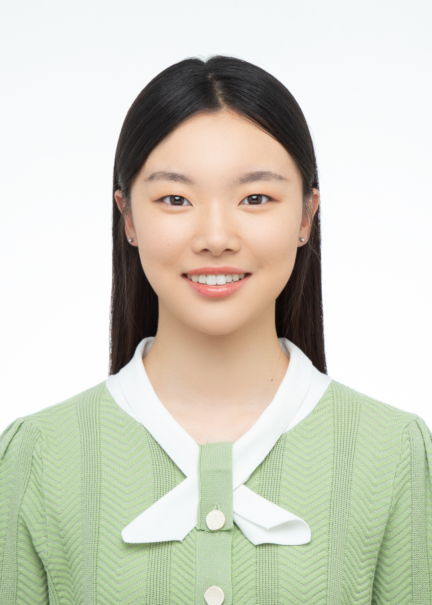

|  | Fangzhou Liu, Ph.D. Student |
I am currently a first-year Ph.D. student at the Department of Computer Science and Engineering, The Chinese University of Hong Kong (CUHK), under the supervision of Prof. Bei Yu since Fall 2023. Previously, I received my B.E. in the School of Electronic Science and Engineering from Nanjing Univeristy (NJU) in 2023. My Chinese name is 刘方舟.
Email: sallyliu921@outlook.com
Github
Machine Learning in EDA
Logic Synthesis Optimization
[C2] Zehua Pei, Fangzhou Liu, Zhuolun He, Guojin Chen, Haisheng Zheng, Keren Zhu, Bei Yu, “AlphaSyn: Logic Synthesis Optimization with Efficient Monte Carlo Tree Search”, IEEE/ACM International Conference on Computer-Aided Design (ICCAD), San Francisco, Oct. 29–Nov. 02, 2023.
[C1] Siting Liu*, Ziyi Wang*, Fangzhou Liu, Yibo Lin, Bei Yu, Martin Wong, “Concurrent Sign-off Timing Optimization via Deep Steiner Points Refinement”, ACM/IEEE Design Automation Conference (DAC), San Francisco, Jul. 09–13, 2023.
Ph.D. Computer Science and Engineering, The Chinese University of Hong Kong, Aug 2023 - present
B.Eng. VLSI Design & System Integration, School of Electronic Science and Engineering, Nanjing Univeristy, Sept 2019 - June 2023
Research Intern, Artificial Intelligence Laboratory, Sep 2022 - Jun 2023
Postgraduate Scholarship, CUHK, 2023-2027
Physics 79 Scholarship, NJU, 2021
People's Scholarship Prize, NJU, 2020 2022